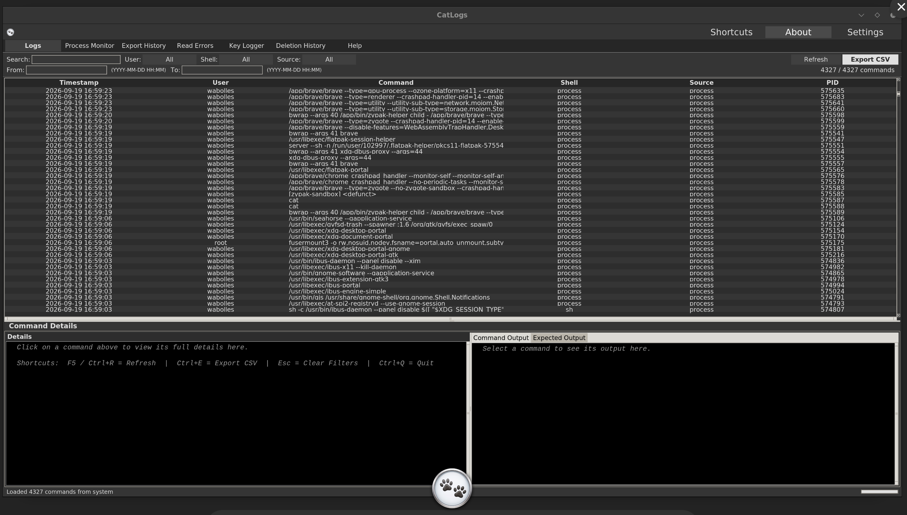
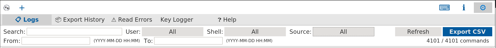
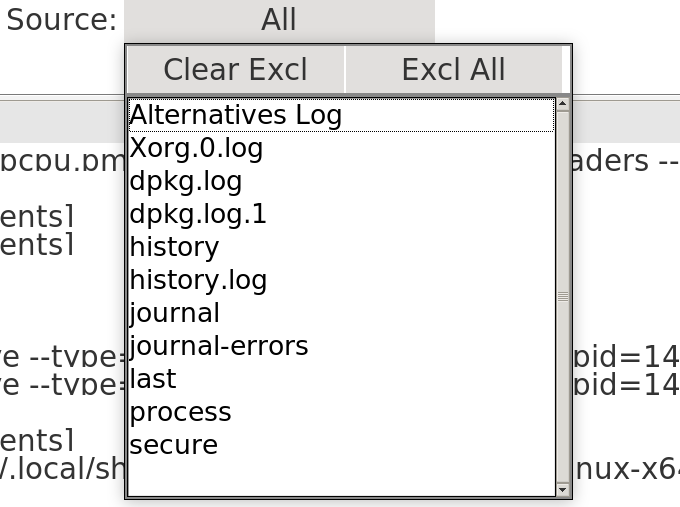
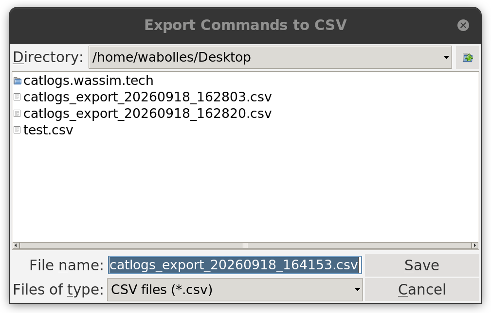
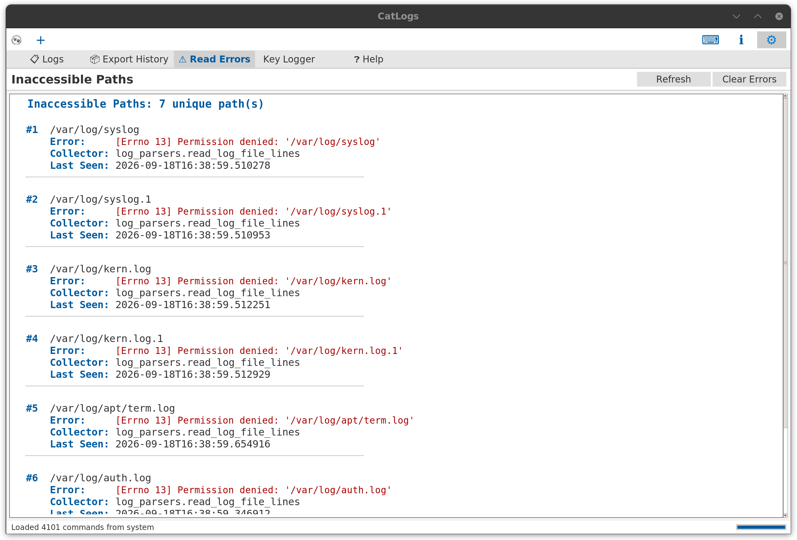
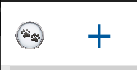
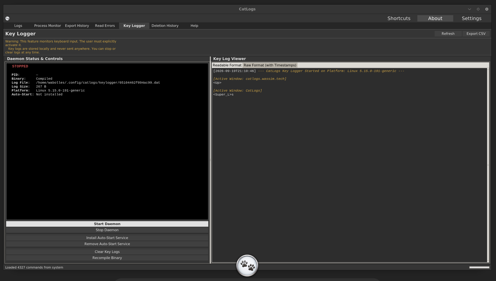
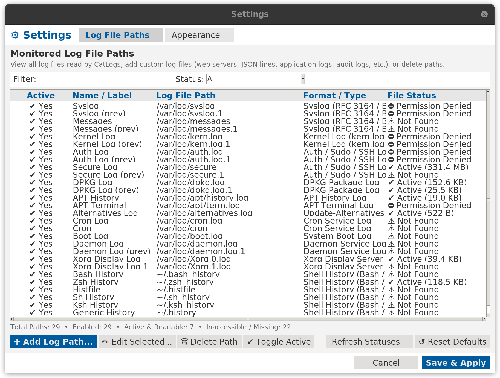
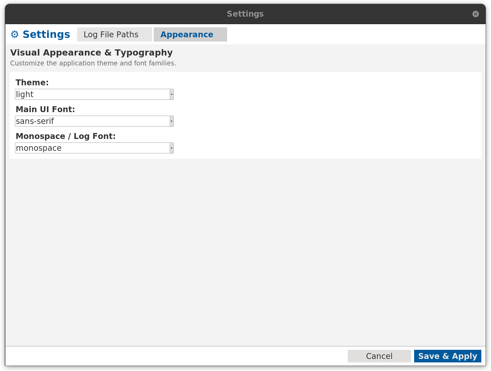
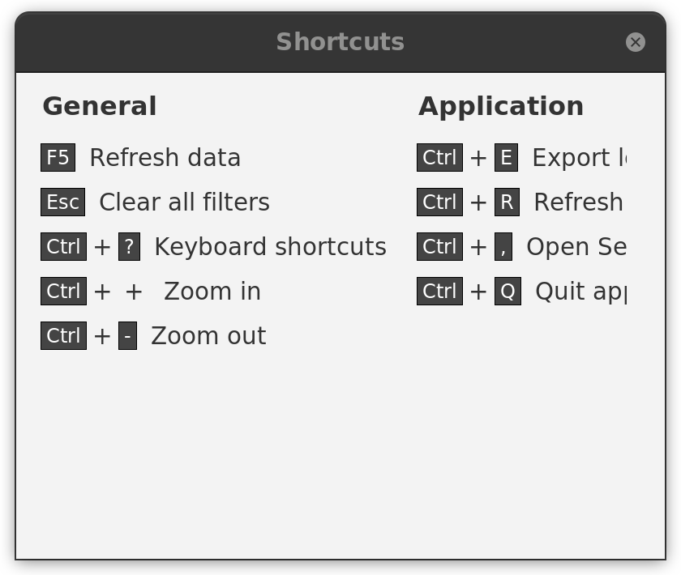

Contents
- Overview
- Main Interface
- Log Sources
- Filtering & Search
- CSV Export
- Read Errors & Inaccessible Paths
- Detail Panel
- Multi-Window
- Deletion & History
- Key Logger (opt-in)
- Settings — Log File Paths
- Settings — Appearance
- Settings — Security
- Keyboard Shortcuts
Overview
CatLogs is a local-only, privacy-first Linux monitoring suite. It collects shell histories, authentication logs, journal entries, process information, daemon snapshots, boot and power activity, lock/session events, security scanner findings, and live system activity into a single searchable interface. All data stays on your machine — no network connections, no telemetry, no data ever leaves your device.
New in CatLogs v1.2.0: the Process Monitor tab offers a high-visibility live dashboard for running services and daemons, the History section includes lock/session tracking, and the Scanner can export professional PDF audit reports for local security reviews.

Main Interface
The CatLogs window is organized into tabs across the top of the application:
- Logs: The primary view — a sortable, filterable table of all collected log entries.
- Process Monitor: A live process dashboard with CPU, memory, state, parent/child details, daemon summary, and one-click kill controls.
- Scanner: Local security findings scanner with persistent history and PDF reporting.
- Lock Screen History: Review screen lock, unlock, login, and logout events from the system.
- Export History: Review previously exported CSV files and PDF audit reports.
- Read Errors: View log paths that could not be read (permission denied, missing files, etc.).
- Key Logger: Opt-in keyboard monitoring with daemon controls.
- Deletion History: Review a history of logs that have been deleted.
- Help: Quick reference and application information.
The filter bar sits directly below the tabs, providing instant access to search, user/shell/source filters, and date range controls.

Log Sources
CatLogs collects from 15+ sources across your Linux system, consolidating disparate logs into a unified, queryable view:
- Shell History: Bash, Zsh, and Fish command histories across user accounts.
- Auth / Sudo logs: Authentication events, privilege escalation, and sudo commands from
/var/log/auth.logor secure logs. - Systemd Journal: Centralized system and service journal entries collected via
systemd-journald. - Running Processes: Live process table snapshots including PIDs, user ownership, and command arguments.
- Process Accounting (lastcomm): Records of previously terminated processes and commands.
- Login/Logout records (last/lastb): Successful and historical session logs via utmp/wtmp.
- Failed login attempts: Failed authentication attempts recorded via btmp logs.
- Syslog: General system activity and daemon logs from standard syslog facilities.
- Kernel log (dmesg): Low-level Linux kernel ring buffer messages and hardware diagnostic events.
- DPKG package logs: Package installation, upgrade, unpack, and removal events.
- APT package logs: High-level package manager transactions and command-line actions.
- Cron job logs: Scheduled job runs, execution records, and cron daemon events.
- Boot logs: System startup sequences and boot records.
- Daemon logs: Background service and daemon operational logs.
- Xorg display server logs: Display manager, graphics driver, and X11 session logs.
- Systemd services status: Operational status and state transitions of registered systemd units.
- Custom log file paths: Support for monitoring user-specified log paths with intelligent format auto-detection for:
- Syslog
- Auth / Sudo
- Web Servers (Nginx / Apache)
- JSON Lines
- Application logs
- DPKG
- Auditd
- Database logs
Use the Source multi-select filter to target specific log sources or combine multiple collectors into a focused view:

Filtering & Search
Isolate critical events quickly with comprehensive search and filtering capabilities:
- Full-text search: Search across all log fields simultaneously for keywords, command arguments, or error strings.
- Multi-select user filter: Filter entries by specific user accounts, with options to include or exclude selected users.
- Multi-select shell filter: Filter shell history by shell type (Bash, Zsh, Fish).
- Multi-select source filter: Target specific log sources or combine multiple collectors into a focused view.
- Date range filtering: Restrict log entries by time interval using flexible From and To filters (supporting
YYYY-MM-DDorYYYY-MM-DD HH:MM:SS). - Quick reset: Clear all active filters and search terms instantly with the Esc key.
CSV Export
Export your log analysis for reporting, auditing, or sharing:
- Filtered view export: Export exactly what you see, maintaining active search criteria, user filters, source filters, and date ranges.
- Audit metadata header: Exported CSV files include structured metadata:
- Software version
- Export timestamp
- Exporter username
- Total records count
- Active filter details (included users, included shells, included sources, date range, search query)
Press Ctrl+E or click the Export CSV button to open the export dialog:

Read Errors & Inaccessible Paths
The Read Errors tab lists all log file paths that CatLogs attempted to read but could not access. Each entry shows:
- The file path that failed
- The error message (e.g.
Permission denied) - Which collector attempted the read
- The timestamp of the last attempt
This helps you diagnose permission issues. Running CatLogs with elevated privileges (e.g. via sudo) will unlock access to protected system logs like /var/log/auth.log and /var/log/syslog.

Detail Panel
Inspect log entries in granular detail:
- Deep inspection: Click any log row to open the detail panel displaying full, untruncated message contents.
- System context: View contextual system state, timestamps, user identities, process IDs, and related metadata corresponding to the event.
Multi-Window
Work across multiple workspaces and log streams simultaneously:
- Simultaneous windows: Open multiple independent CatLogs windows at the same time.
- Parallel inspection: Compare logs side-by-side across different filters, sources, or time periods without clearing your current workspace.
Click the + button in the top-left corner or press Ctrl+N to open a new window:

Deletion & History
Manage sensitive or unwanted log entries directly from the main view:
- Delete Logs: Right-click on any log entry in the main table to delete it (disabled if Protection Mode is active).
- Deletion History: Review the complete list of deleted logs from the dedicated Deletion History tab to ensure accountability.
Key Logger (opt-in)
Optional, privacy-preserving local keyboard monitoring:
- Opt-in daemon: Monitor keyboard input exclusively via an explicitly enabled daemon.
- Direct daemon control: Start and stop daemon monitoring directly from within CatLogs.
- View key logs: Review captured keystrokes in a dedicated log view.
- Reboot persistence: Optionally install an auto-start service to preserve logging across system reboots.

Settings — Log File Paths
Open Settings with Ctrl+, and select the Log File Paths tab to configure collectors and monitor non-standard log destinations:
- Monitored paths overview: View all currently active and configured log file paths in one management table.
- Add custom log file paths: Ingest custom log files with automatic format detection.
- Format preview and testing: Test and preview log parsing rules before adding a path to ensure accurate column extraction.
- Lifecycle management: Toggle the active state of individual paths or remove paths when no longer needed.

Settings — Appearance
Open Settings with Ctrl+, and select the Appearance tab to customize the visual presentation:
- 6 built-in themes: Dark, Light, Dracula, Monokai, Nord, and Cappuccino.
- Customizable main UI font: Configure the interface font family and size.
- Customizable monospace/log font: Choose the fixed-width font for log rows and terminal output.
- Zoom in/out support: Scale the entire user interface up or down for high-resolution displays.

Settings — Security
Open Settings with Ctrl+, and select the Security tab to manage application protection:
- Protection Mode: Enable Protection Mode to prevent accidental or unauthorized log deletion. When active, the log deletion feature is disabled.
Keyboard Shortcuts
Navigate and control CatLogs efficiently without leaving the keyboard. Press Ctrl+? to open the shortcuts reference dialog:

| Shortcut | Description |
|---|---|
F5 / Ctrl+R |
Refresh log sources and reload entries |
Ctrl+E |
Export currently filtered logs to CSV |
Ctrl+N |
Open a new CatLogs window |
Esc |
Clear all active filters and search query |
Ctrl++ / Ctrl+- |
Zoom in / Zoom out user interface |
Ctrl+0 |
Reset zoom level to default |
Ctrl+, |
Open Settings and Custom Log Paths dialog |
Ctrl+? |
Open Keyboard Shortcuts reference dialog |
Ctrl+Q |
Quit application |